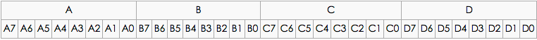
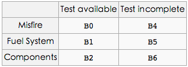
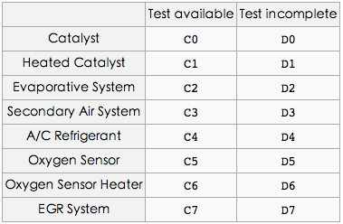
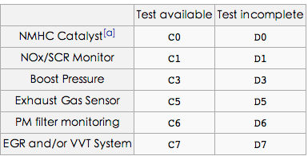
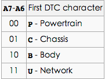
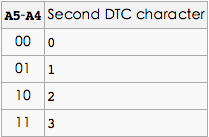
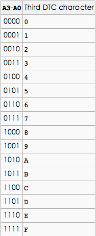

OBD-II PIDs
2014-06-14 16:37:00 by suphyOBD-II PIDs
OBD-II PIDs是用于从车辆请求数据的代码,用作诊断工具。
名词解释：
- DTC: Diagnostic Trouble Codes 故障诊断码
- HEV: hybrid electric vehicle 混合动力电动汽车
- MIL: malfunction indicator lamp 故障指示灯
-
ECU Electronic Control Unit 电子控制单元
-
BCD: Binary-Coded Decimal 二进制码十进制数或二-十进制代码，用4位二进制数来表示1位十进制数中的0~9这10个数码
Modes：
| Mode (hex) | Description |
|---|---|
| 01 | 显示当前数据 |
| 02 | 显示冻结帧数据 |
| 03 | 显示存储诊断故障代码 |
| 04 | 清除诊断故障代码和存储值 |
| 05 | 测试结果,氧传感器监测 |
| 06 | 测试结果,其他组件/系统监控 |
| 07 | 显示等待诊断故障代码 |
| 08 | 控制电路板组件/系统的操作 |
| 09 | 请求车辆信息 |
| 0A | 清除故障诊断码 |
Standard PIDs：
注意:
- Modes 1和 Modes 2基本上是相同的, 除了Modes 1提供当前信息, 而Modes 2提供了上一次诊断故障代码被设置的时间点上相同数据信息的快照。
- PID
01是个例外只能在Mode 1中, PID02只能在Mode 2中。 - 如果Mode 2 PID
02返回零, 那么没有快照并且所有其他Mode 2的数据是没有意义的。
Bit-Encoded-Notation:

Mode 01
Mode 01 PID 01
监测自DTCs清除后的状态。
0101这个PID的一次请求返回4个字节数据。
第一字节A包含两端信息:
A7: MIL（检查发动机灯）是否点亮。
A6-A0 :表示当前标记在ECU(电子控制单元)中诊断故障码的数量。
第二(B)，第三(C)和第四(D)字节给出某些车载测试的可用性和完整性。
需要注意：测试可用性被置位（1）bit标示；完整性被复位（0）bit标示。
| Bit | Name | Definition |
|---|---|---|
| A7 | MIL | 关或开，表示CEL/ MIL是否开启 |
| A6-A0 | DTC_CNT | 可用于显示确认排放相关故障码的数量 |
| B7 | 保留字 | 保留的(应该为0) |
| B3 | No Name | 0 = 支持火花点火显示器 1 = 支持压缩点火显示器 |
下面是字节B的通用定义：

第三(C)和第四(D)字节有不同的解释，这取决于发动机是火花点火还是压缩点火。
在第二个（B）字节中，位B3表示如何解释C和D字节，0是火花, 1是被压缩。
当火花点火显示器时bytes C 和 bytes D：

当压燃式显示器时bytes C 和 bytes D：

Mode 01 PID: 03
燃油系统状态，一次请求返回2个字节数据。 第一个字节描述了燃料系统＃1。
| Value | Description |
|---|---|
| 1 | 开环由于发动机温度不足 |
| 2 | 闭环，采用氧传感器的反馈来确定混合燃料 |
| 4 | 开环由于发动机负荷或燃料因减速而切断 |
| 8 | 开环由于系统故障 |
| 16 | 闭合回路，使用至少一个氧传感器，但有一个故障在反馈系统 |
第二个字节描述燃料系统＃2（如果存在的话），并且是第一个字节相同的编码。
Mode 02
Mode 02接受Mode 01相同的PID，并且具有相同的意义，但返回的信息是冻结帧创建时的信息
你必须在消息的数据部分发送帧号。
Mode 02 PID: 02
引起冻结帧被存储的故障诊断码
Mode 03 (无PID要求)
请求故障码
该模式的一次请求返回已设定的故障码列表。该列表是使用ISO15765-2协议进行封装。 如果有小于等于两个DTCs(4 bytes)，那么他们是在ISO-TP单帧（SF）中返回。 列表中三个及以上的DTCs报告在多个帧中，以帧的精确计数依赖于该通信的类型和寻址的详细信息。
每一个故障码需要2个字节(AB)来描述。故障代码的文本描述可以如下进行解码。
在故障代码的第一个字符是由第一个字节的前两位决定：

以下四个位数是BCD编码。在DTC中的第二个字符是数字由下表定义：

在DTC中的第三个字符是数字被定义为：

在DTC中的第四和第五字符和第三字符的定义方式一样，但使用bits B7-B4和B3-B0。
由此产生的五个字符的代码应该看起来像U0158，可以对照OBD-II DTCs表查看。
十六进制字符（0-9，AF），而比较少见的，是允许在代码本身的最后3个位置。
Enumerated PIDs
某些PID是被专门解释，并且不一定恰好逐位编码的，或以任何比例。对于这些PID值被列举出来
Mode 04
清除故障码/关闭故障指示灯（MIL）/检查发动机灯 清除所有存储的故障码和关闭故障指示灯。